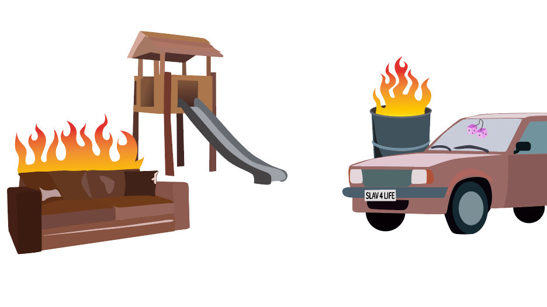
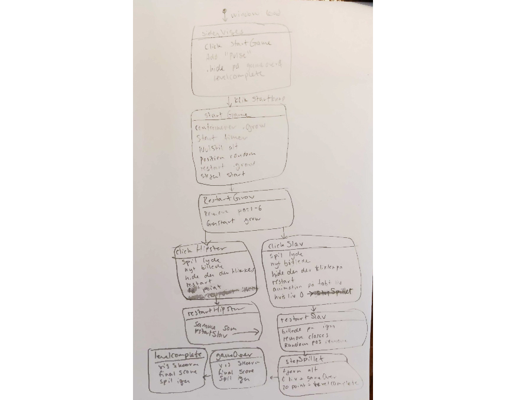
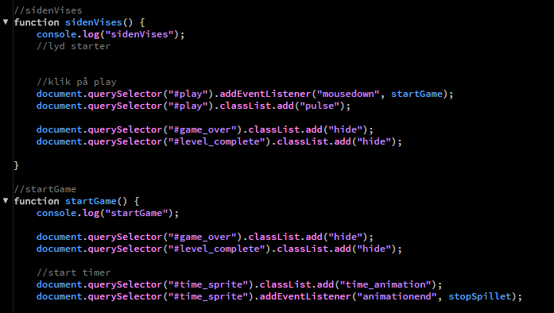

Grundlæggende animation
Beskrivelse
Tema 4, Animation. Et tema der igen gennemgår en række tanker, der via idégenererings-teknikker og skitser bliver til virkelighed. Med moodboard og styletile kommer frem til en verden, hvor man kan se at det hele passer sammen. Ved brug af State Machine Diagram blev en idé til kode, hvor der blev brugt JavaScript til at fuldføre til færdig produkt. UI-elementer er blevet gennemtænkt sammen med start og slutskærm(e), så det hele får den samme fornemmelse og stemning. Illustrator og Brackets har været de to vigtigste programmer her, samt en browser med Inspector-tool, som har været uundværlig. Introduktion til GitHub er også blevet givet til dette tema, som har været en stor hjælp, når man sidder med så meget kode. Derudover er der blevet lavet undersøgelse af målgruppe samt blevet testet og spurgt på slutproduktet, om spillet har fungeret korrekt og som brugeren vil have det.
Idégenerering
Baggrundshistorien
Britney Spears meme
Hele ideen til mit spil udkom fra dette meme, som jeg faldt over og syntes var morsomt og gerne ville videreudvikle på. Til det brugte jeg flere værktøjer.
Mindmap
Mindmap er en metode til at få nedskrevet en række ideer på en overskuelig måde, så man også kan følge tankestrømmen senere hen. Her begynder udformningen på mit spil så småt at tage form.
Papirprototype
Ved at lave en papirprototype kan man hurtigt skabe noget visuelt, som man kan klippe i og rykke rundt på, for at få en idé om det visuelle fungerer. Det kan man også selvom ens tegneevner ikke ligefrem er de bedste :)
Vektorgrafik
Grundlæggende grafik

Baggrund
Det visuelle i spillet er lavet i Illustrator og kaldes vektorgrafik, hvilket er uendeligt skalérbart. Spillet er bygget op af en baggrund, mellemgrund og forgrund. Samlede assets (spilelementer) som skal være en del af den interaktive del af spillet - personer og knapper, bliver sat ind for sig.
Mellemgrund
Forgrund
Spilelementer
Assets er en betegnelse for de øvrige elementer, som skal kunne interagere på skærmen, som bliver lavet som SVG-filer.
UI-elementer
UI-elementerne er knapper og andet "ekstra" som får spillet til at fungere, som ikke er en aktiv del af spiloplevelsen, men som får det hele til at hænge sammen. Her ses knapper, tidsbar, liv og point.
Lyd
Overblik over lydfilerne til spillet
En del af spiloplevelsen er også de lyde, der følger med. Jeg har brugt tid på både at kreere en skud-lyd i Ableton, men også en god lyd ved skud af den rigtige person, dårlig lyd ved skud af den forkerte samt et helt beat, som er baggrundsmusik i løbet af hele spillet.
Planlægning og kode
State Machine Diagramme
Spillet skulle kodes i JavaScript og der blev det hurtigt meget relevant at have en form for plan for koden på forhånd. Her kommer State Machine Diagramme ind i billedet, hvor man laver en opdeling af de forskellige aktiviteter, inddelt i sections som gør koden overskuelig.
JavaScript
Det er svært at vide, hvad der vil være interessant a vise af min JavaScript-kode. Her vises et screenshot af hvordan spillet startes op, hvad min EventListener gør og hvordan netop den fører os videre til næste function, som er "startGame".